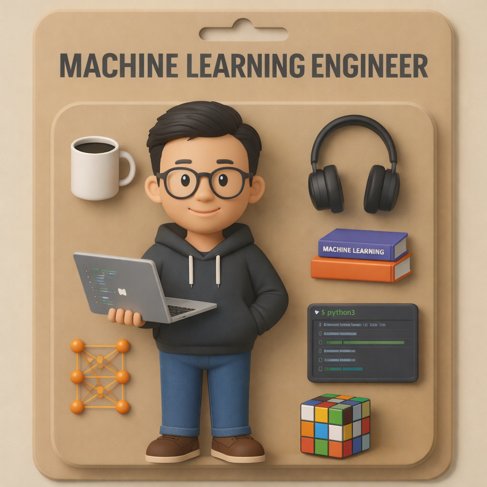

From edge deployments in remote mines to GenAI pipelines at enterprise scale — I turn hard problems into production-ready AI systems.

I started out studying environmental systems, but data kept pulling me deeper. My PhD at the University of Western Australia — applying machine learning to urban catchment modelling — led to five peer-reviewed publications and the realisation that the most interesting problems live at the edge of messy reality and principled computation.
That curiosity has driven 7+ years building enterprise AI platforms in the resources industry, first at Rio Tinto and now at South32. I've shipped everything from predictive maintenance models for 1,700 km rail networks to air-gapped edge ML deployments that run on isolated mine sites with zero internet — and become the enterprise standard. I care deeply about the gap between "it works in a notebook" and "it runs reliably at scale."
Today my focus is on LLMs, GenAI pipelines, and making ML platforms that entire organisations can actually use — not just one team. Outside of work, I'm usually mentoring junior engineers, exploring the latest in multi-agent AI, or finding excuses to spend time in the outdoors.